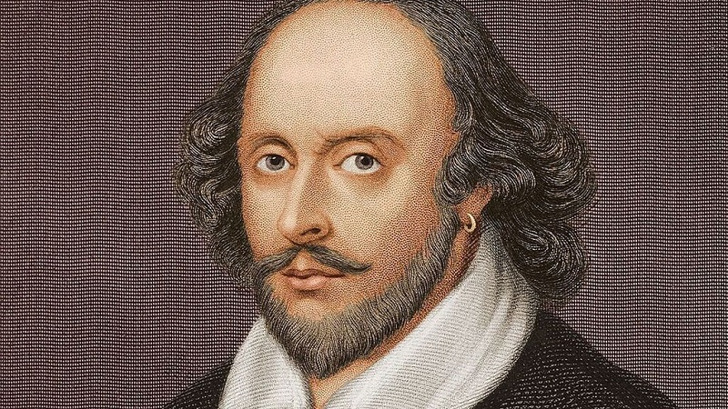
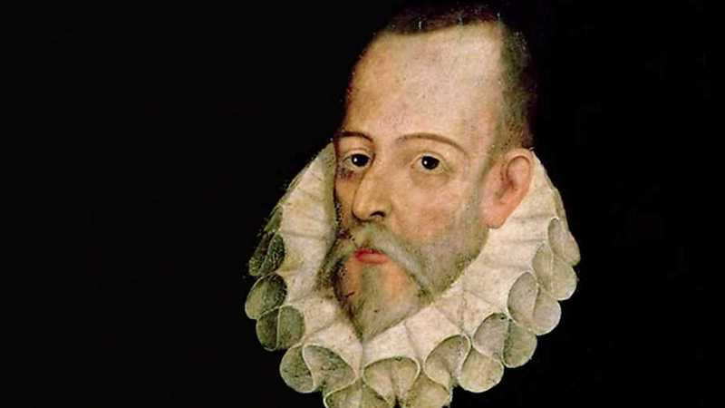
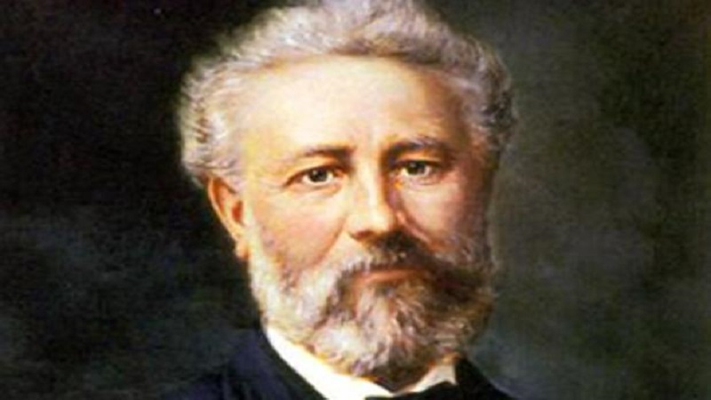
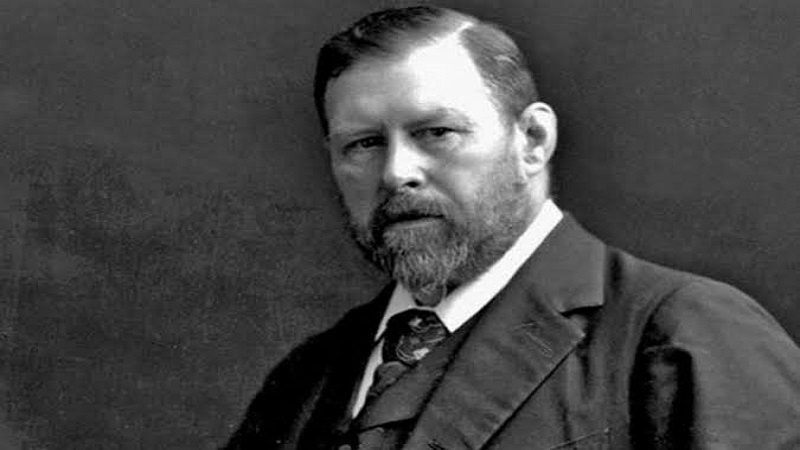
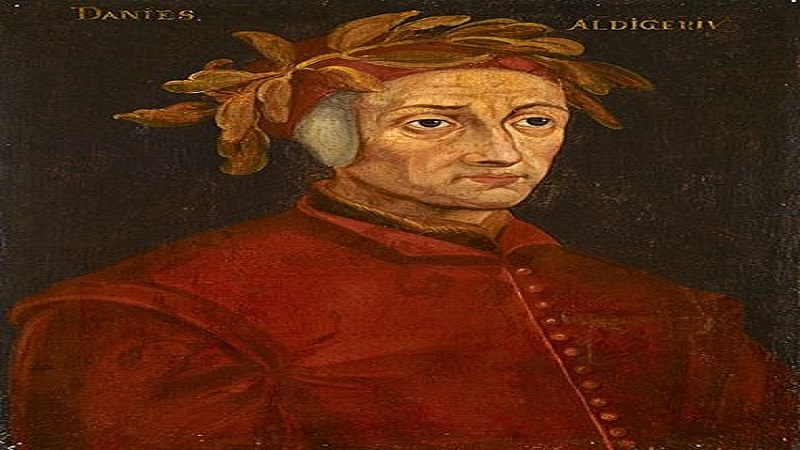
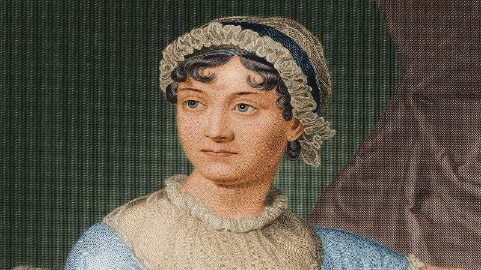

Autores clásicos de la literatura universal
-

(Stratford on Avon, Reino Unido, 1564 - id., 1616) Dramaturgo y poeta inglés.
-

(Alcalá de Henares,5 29 de septiembre de 1547-Madrid, 22 de abril4 de 1616) fue un novelista, poeta, dramaturgo y soldado español
-

(Nantes, 8 de febrero de 1828-Amiens, 24 de marzo de 1905), fue un escritor, poeta y dramaturgo francés célebre por sus novelas de aventuras y por su profunda influencia en el género literario de la ciencia ficción.
-

(Clontarf; 8 de noviembre de 1847 - Londres; 20 de abril de 1912) fue un novelista y escritor irlandés, conocido por su novela Drácula (1897).
-

(Florencia, c. 29 de mayo de 1265-Rávena, 14 de septiembre de 1321), fue un poeta italiano, conocido por escribir la Divina comedia, una de las obras fundamentales de la transición del pensamiento medieval al renacentista y una de las cumbres de la literatura universal
-

(Steventon, 16 de diciembre de 1775-Winchester, 18 de julio de 1817) fue una novelista británica que vivió durante la época georgiana.